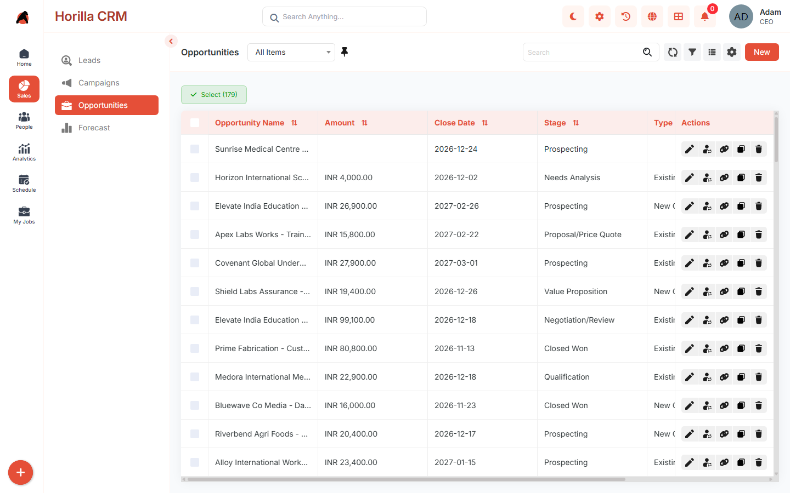
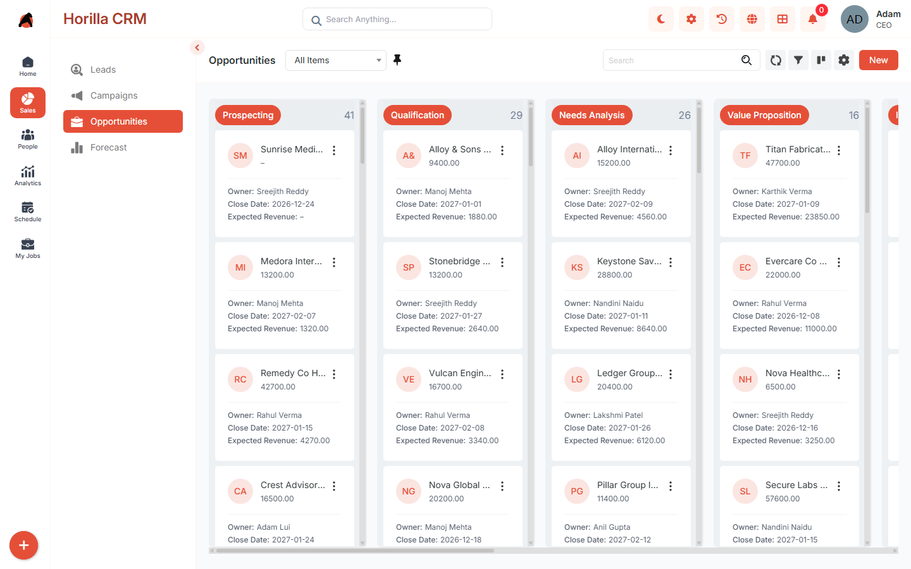
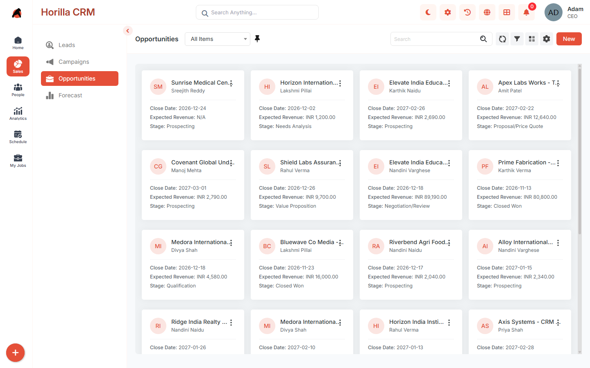
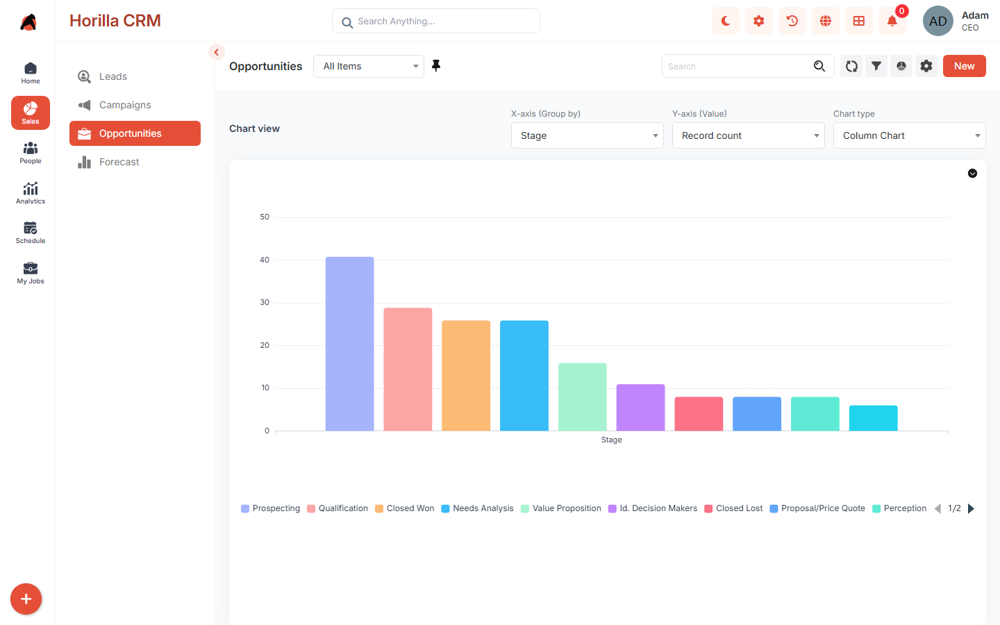
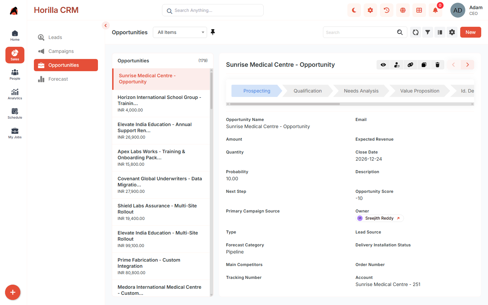
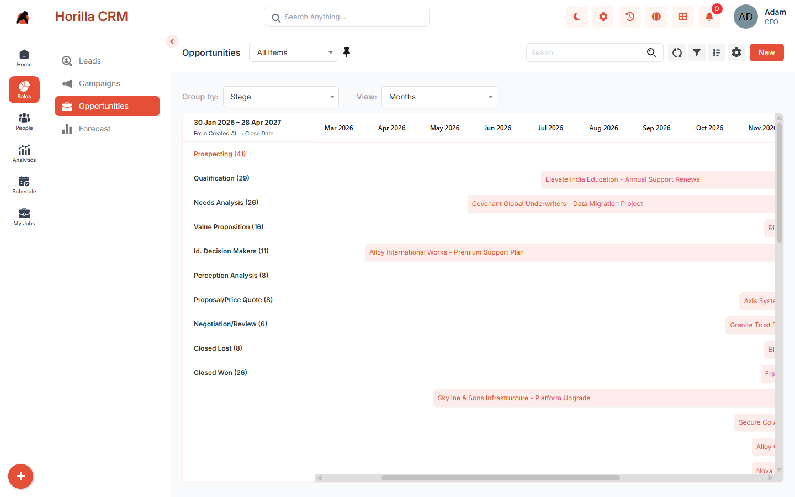
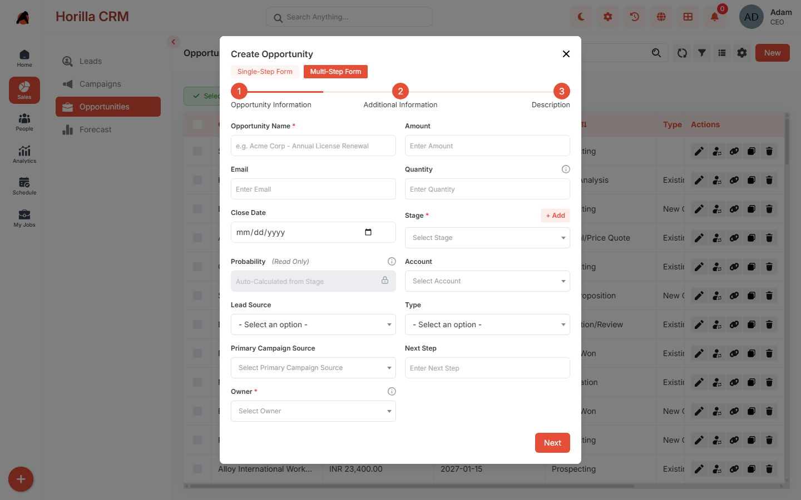
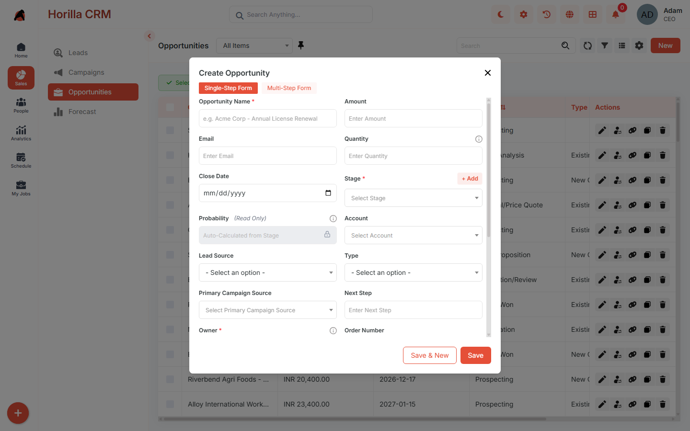
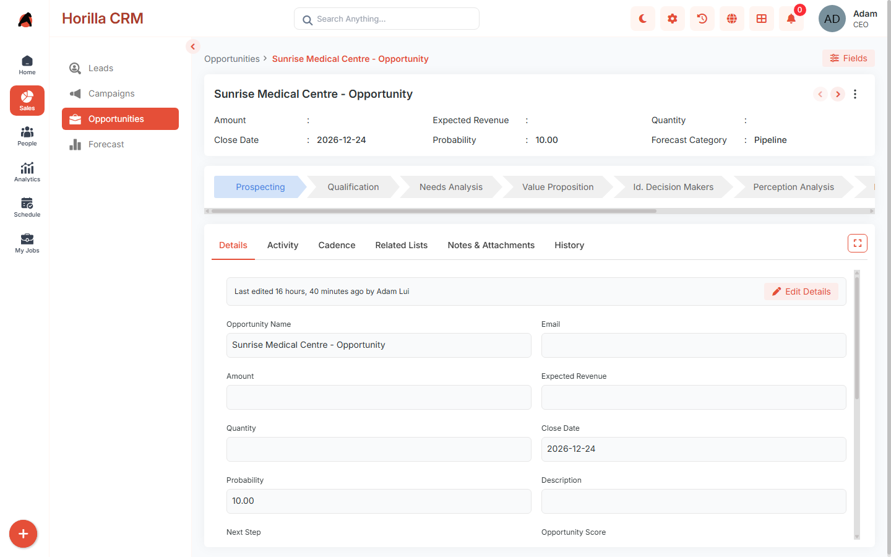

Introduction
The Opportunities module is where active sales deals are managed. It lets sales teams move deals through the pipeline stages, monitor how each deal is progressing, close deals, and manage the contacts, activities and follow-ups attached to them.
Key Features and Functionalities
1. Opportunities Overview
Purpose: see and manage every opportunity from one centralised list.
- Go to Sales → Opportunities. The page opens on the Kanban view. List, the tabular view, is on the view toolbar.
- In List view, use the search box and filters to narrow the opportunities by criteria such as opportunity name, stage or owner.
- Columns can be sorted, and the filters applied to the list can be customised.
- Select opportunities with the row checkboxes to run bulk actions: Update, Export and Bulk Delete.

2. Kanban View
Purpose: follow the sales pipeline visually, stage by stage.
- Each column represents a stage of the sales pipeline.
- How opportunities are categorised into stages is customised through the Kanban settings.
- Drag and drop an opportunity card from one column to another to move it to a different stage.

3. Card View
Purpose: scan opportunities as compact summary cards.
- Switch to Card View from the view toolbar.
- Each card shows the key details: Name, Stage, Amount and Owner.
- The same search and filter options available in List View apply here.

4. Group By View
Purpose: organise opportunities into collapsible groups for comparison.
- Switch to Group By View from the view toolbar.
- Group opportunities by Stage, Owner, Lead Source or Account.
- Each group appears as a section that can be expanded or collapsed, making sets of deals easier to compare.

5. Chart View
Purpose: analyse opportunity data graphically.
- Switch to Chart View from the view toolbar.
- Charts summarise opportunities by stage, by source and by ownership, giving a view of pipeline health and deal distribution.

6. Split View
Purpose: read opportunity details without leaving the list.
- Activate Split View from the view toolbar.
- The left panel holds the opportunity list; the right panel shows the details of the selected opportunity.
- Selecting an opportunity on the left loads its details on the right, with no page navigation.

7. Timeline View
Purpose: see opportunities in chronological order.
- Switch to Timeline View from the view toolbar.
- Opportunities are ordered by creation date or activity date, which makes trends and peak periods visible.

8. Creating a New Opportunity
Purpose: capture and store the information of a new deal.
Click New on the Opportunities page to open the creation form. The form offers two entry modes, and you can switch between them at any time while filling it in.
Multi-Step Form
- Step 1 – Opportunity Information: Opportunity Owner, Opportunity Name, Account, Amount, Expected Close Date, Stage.
- Step 2 – Additional Information: Probability, Lead Source, Campaign.
- Step 3 – Description.
- Use Next and Previous to move between the steps, then click Save to create the opportunity.

Single-Step Form
- All opportunity fields are presented on one page for quick data entry.
- Use the toggle in the form header to switch to single-step mode.
- Click Save to create the opportunity.

9. Opportunity Detailed Information
Purpose: work with everything recorded against a single opportunity.
- Open the detail view by clicking an opportunity from any of the views above.
- Related lists cover the Contacts attached to the deal along with their roles, the opportunity team and the opportunity splits.
- Further sections hold Activities, Cadences, Notes and Attachments and History.
Edit Details checks the opportunity the same way a normal save does. Probability stays read-only. Changing Stage refreshes Probability, and Expected Revenue follows Amount × Probability. An empty Amount clears Expected Revenue. The separate Edit action is not shown when Edit Details can edit the record.

10. Closing an Opportunity
Purpose: record the final outcome of a deal.
- Open the opportunity's detail view and click the final stage in the progress bar.
- A selection modal appears offering two outcomes: Closed Won for a successful deal and Closed Lost for an unsuccessful one.
- Select the outcome to finalise the opportunity.